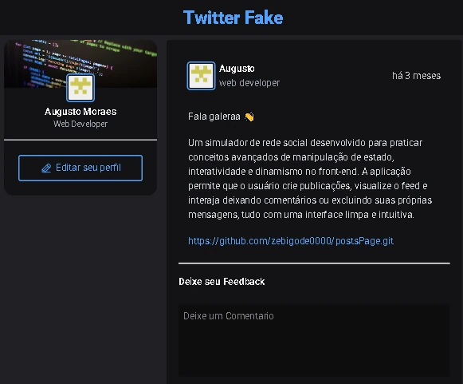
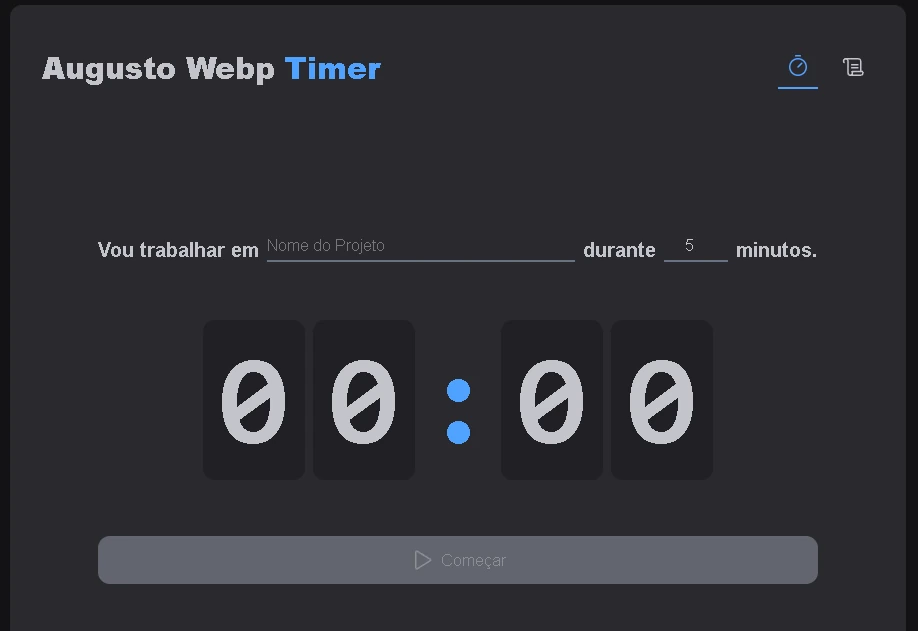
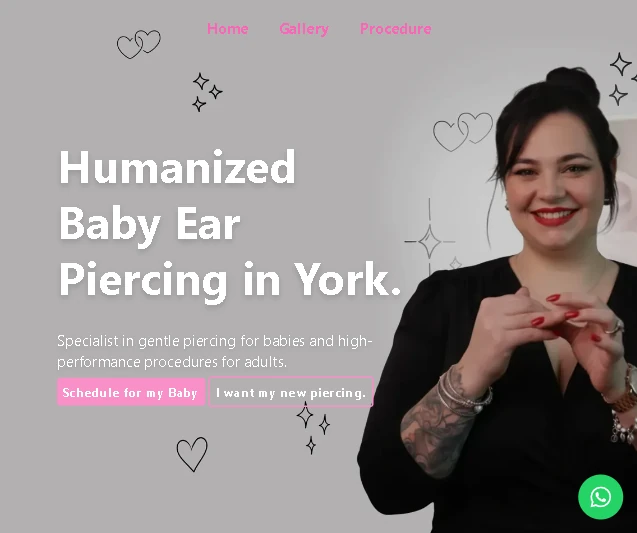

Projetos em Destaque
Uma seleção dos meus últimos trabalhos desenvolvidos.

Feed Interativo (Twitter Fake)
ReactSimulador de rede social com interações em tempo real focado em conceitos avançados de imutabilidade e manipulação de estado no React. A aplicação apresenta renderização de feed dinâmico, sistema de comentários com escopo isolado, exclusão por filtros e componentes com animações de foco inteligentes.

Timer de Estudos & Foco
EstudoAplicação de gerenciamento de tempo estilo Pomodoro com histórico automatizado e controle de estados cíclicos. O projeto foi desenvolvido aplicando conceitos avançados de arquitetura de software no ecossistema React, contando com persistência de dados local, controle de status em tempo real e validações estritas de formulários.

Landing Page Internacional (Canadá)
FreelanceLanding page de alta conversão desenvolvida sob demanda para o mercado canadense através de freela. O projeto prioriza performance extrema, SEO semântico e design minimalista, trazendo microinterações imersivas e animações de scroll refinadas criadas com a biblioteca GSAP.
Pagina de Vendas de Site
FreelanceMinha landing page institucional de vendas criada para captação de clientes e conversão de novos projetos. Desenvolvida com foco em SEO local, carregamento ultra-rápido com Tailwind CSS e gatilhos visuais estratégicos integrados a uma identidade visual moderna e de alto impacto.